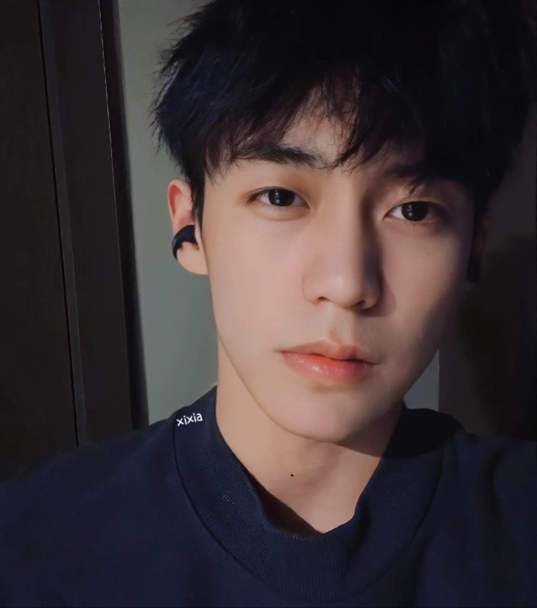

|
我的lover----余庆伟 |
他叫余庆伟 2002 08 21 湖北宜昌人 身高174 有大大的卧蚕 直播很乖很治愈很讨人爱 叙利亚作息 我很喜欢
余庆伟，2002年8月21日出生于湖北省宜昌市，嘉尚传媒签约艺人，淘宝模特、游戏主播、抖音网红。外号老余、小余、余总、叙利亚王子。喜欢打LOL和斗地主。最近他在网络上超火，火起来还是靠抖音的迅速传播，至于火的原因，有很多人给出了答案，首先余庆伟的长相、性格戳中了很多女孩心目中理想型的样子，帅气、温暖、性格直爽，而且非常细心。余庆伟凭借帅气的外表和阳光、温暖、直爽的性格吸粉无数，抖音粉丝900多万，点赞高达近1.1亿。
当然不仅仅是帅，他三观正，温柔又低调这才是他越来越火的原因！当然我觉得他的粉丝也有很大的作用，因为抖音上粉丝为他剪辑的视频非常非常棒，他也会去批作业，真的是非常温柔可爱的男孩纸 ^-^
（你以为他是打电竞的吗？并不是，他经常直播打斗地主）大半夜看他斗地主还连着输 又菜又爱玩（好叭他不承认）
大家都叫他老余 哦～ （其实还叫他小学生 ，其实是一个梗啦～
余庆伟有一个爱好就是在深夜打游戏，作息像是生活在叙利亚（叙利亚和北京时差6小时）也正是因为如此，他说自己执行的是叙利亚的时间，所以自称是叙利亚小王子，因此被粉丝调侃为是叙利亚人。为了维护粉丝的利益，余庆伟还经常为粉丝们打抱不平，虽然总是以失败告终，却更为他赢得了粉丝的喜爱和尊重。现在的网友看多了虚假的东西，对余庆伟这样真实低调的性格反而更喜欢。余庆伟有着大大的眼睛和大大的卧蚕，所以在笑的时候，总会给人一种如沐春风的感觉 *__*
是我的宝藏男孩！虽然很自私的不想分享他（好叭因为情敌实在太多了打不过）但是他火起来被越来越多的人看见我们还是超级开心的！希望老余越来越好！！ |
|  |
 |
|
|
| |